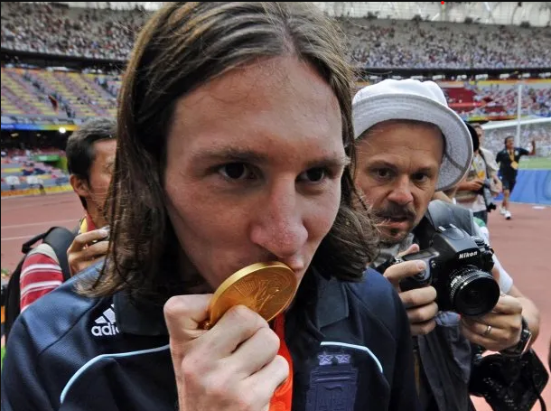
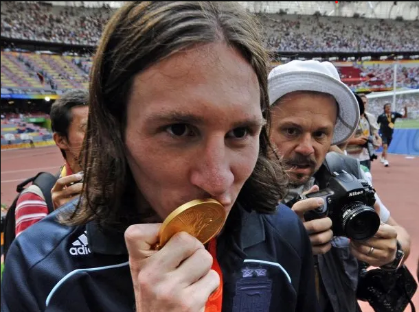
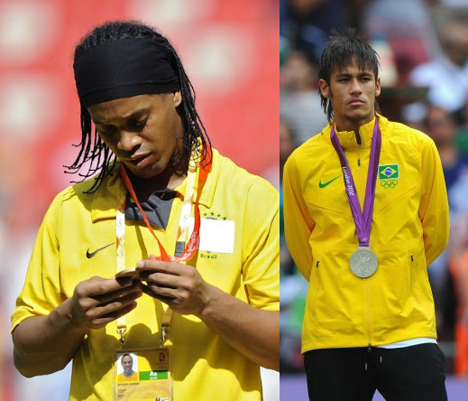

La Evolución del Fútbol en los Juegos Olimpicos
La aparición del fútbol en los Juegos Olímpicos de París 1900 marcó el inicio de una tradición que sigue hasta hoy, siendo parte integral de todas las ediciones, a excepción de Los Ángeles 1932. Hay que recalcar que en los JJ.OO de 1900 y 1904 solo participaban 3 equipos
Los futbolistas profesionales masculinos fueron aceptados por primera vez, con algunas limitaciones, en Los Ángeles 1984, y en Barcelona 1992 el torneo se transformó en una competición para jugadores menores de 23 años.
Cuatro años más tarde, en Atlanta, se autorizó la inclusión de tres jugadores mayores de 23 por equipo, y esta política continúa hasta el día de hoy en la selección de jugadores para esta destacada competición.
Atlanta 1996 también presenció el debut del fútbol femenino en los Juegos Olímpicos, donde el equipo anfitrión, Estados Unidos, se llevó el primer título. La selección femenina de Estados Unidos ha ganado cuatro de las siete competiciones olímpicas de fútbol femenino.
Jugadores destacados historicamente
Barcelona 1992: Uno de los grandes destacados fue Pep Guardiola el actual entrenador del manchester city, que junto a sus compañeros consiguieron que la medalla de oro se quedara en casa.
 Seleccion Española en 1992
Seleccion Española en 1992
 En mitad de la imagen Pep Guardiola con la medalla conseguida.
En mitad de la imagen Pep Guardiola con la medalla conseguida.
Beijing 2008: En esta ocasion el mas destacado fue Don Lionel Andres Messi el cual actualmente sigue siendo uno de los mejores jugadores del mundo. Este al igual que Pep consiguio llevarse la medalla de oro para Argentina. Esta hazaña no fue solo suya fue tambien de sus compañeros como Angel Di Maria o Javier Mascherano
 Argentina 2008
Messi besandose la medalla
Argentina 2008
Messi besandose la medalla
Otros de los jugadores de fútbol superestrella son los brasileños Ronaldinho (bronce en Beijing 2008) y Neymar; este último logró la plata en Londres 2012 cuando la Verdeamarilla fue derrotada por México
De izquierda a derecha Ronaldinho con su medalla de bronce Beijing 2008 y en la derecha Neymar con su medalla de plata Londres 2012Equipos destacados
Los equipos como Brasil, Argentina, Alemania, España, Estados Unidos, entre otros. Han tenido un gran éxito en el fútbol olímpico, ganando múltiples medallas de oro y dejando una huella indeleble en la historia del deporte.
Equipos ganadores de medallas de oro en Juegos Olímpicos de fútbol
- Hungría (3 medallas de oro)
- Brasil (2 medallas de oro)
- Argentina (2 medallas de oro)
- Unión Soviética (2 medallas de oro)
- Uruguay (2 medallas de oro)
- Francia (1 medalla de oro)
- Italia (1 medalla de oro)
- Alemania (1 medalla de oro)
- Checoslovaquia (1 medalla de oro)
- España (1 medalla de oro)
- Nigeria (1 medalla de oro)
- Camerún (1 medalla de oro)
- Polonia (1 medalla de oro)
- Yugoslavia (1 medalla de oro)
- Suecia (1 medalla de oro)
- Bélgica (1 medalla de oro)
- México (1 medalla de oro)
Últimas finales
Aqui podremos encontrar los ultimos finalistas desde 1908:
- Londres 1908
Final: Inglaterra vs Dinamarca. Campeón: Inglaterra tras ganar 2-0 - Estocolmo 1912
Final: Inglaterra vs Dinamarca. Campeón: Inglaterra tras ganar 4-2 - Amberes 1920
Final: Bélgica campeón por la descalificación de Checoslovaquia - París 1924
Final: Uruguay vs Suiza. Campeón: Uruguay ganando 3-0 - Ámsterdam 1928
Final: Uruguay vs Argentina. Campeón: Uruguay después de ganar 2-1 en la vuelta y empatar 1-1 en la ida - Los Ángeles 1932
No hubo fútbol en estas Olimpíadas por veto de profesionales - Berlín 1936
Final: Italia vs Austria. Campeón: Italia 2-1 - Londres 1948
Final: Suecia vs Yugoslavia. Campeón: Suecia 3-1 - Helsinki 1952
Final: Hungría vs Yugoslavia. Campeón: Hungría 2-0 - Melbourne 1956
Final: URSS vs Yugoslavia. Campeón: URSS - Roma 1960
Final: Yugoslavia vs Dinamarca. Campeón: Yugoslavia 3-1 - Tokio 1964
Final: Hungría vs Checoslovaquia. Campeón: Hungría 2-1 - México 1968
Final: Hungría vs Bulgaria. Campeón: Hungría 4-1 - Múnich 1972
Final: Polonia vs Hungría. Campeón: Polonia 2-1 - Montreal 1976
Final: Alemania Democrática vs Polonia. Campeón: Alemania 3-1 - Moscú 1980
Final: Checoslovaquia vs Alemania. Campeón: Checoslovaquia 1-0 - Los Ángeles 1984
Final: Francia vs Brasil. Campeón: Francia 2-0 - Seúl 1988
Final: URSS vs Brasil. Campeón: URSS 2-1 - Barcelona 1992
Final: España vs Polonia. Campeón: España 3-2 - Atlanta 1996
Final: Nigeria vs Argentina. Campeón: Nigeria 3-2 - Sidney 2000
Final: Camerún vs España. Campeón: Camerún en penaltis tras empatar 2-2 (5-3) - Atenas 2004
Final: Argentina vs Paraguay. Campeón: Argentina 1-0 - Beijing 2008
Final: Argentina vs Nigeria. Campeón: Argentina 1-0 - Londres 2012
Final: México vs Brasil. Campeón: México 2-1 - Río 2016
Final: Brasil vs Alemania. Campeón: Brasil 5-4 en penaltis tras el 1-1 del partido - Tokio 2020
Final: Brasil vs España. Campeón: Brasil 2-1 en la prorroga
Próximos Juegos Olímpicos
Los próximos Juegos Olímpicos de Verano se llevarán a cabo en París en 2024, donde el fútbol será nuevamente uno de los deportes destacados, atrayendo a miles de aficionados de todo el mundo.